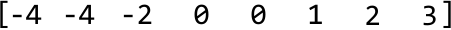

Triplet Sum
Triplet Sum
Given an array of integers, return all triplets [a, b, c] such that a + b + c = 0 . The solution must not contain duplicate triplets (e.g., [1, 2, 3] and [2, 3, 1] are considered duplicates). If no such triplets are found, return an empty array.
Each triplet can be arranged in any order, and the output can be returned in any order.
Example:
Input: nums = [0, -1, 2, -3, 1]
Output: [[-3, 1, 2], [-1, 0, 1]]
Intuition
A brute force solution involves checking every possible triplet in the array to see if they sum to zero. This can be done using three nested loops, iterating through each combination of three elements.
Duplicate triplets can be avoided by sorting each triplet, which ensures that identical triplets with different representations (e.g., [1, 3, 2] and [3, 2, 1]) are ordered consistently (e.g., [1, 2, 3]). Once sorted, we can add these triplets to a hash set. This way, if the same triplet is encountered again, the hash set will only keep one instance. Below is the code snippet for this approach:
Python
JavaScript
Java
from typing import List
def triplet_sum_brute_force(nums: List[int]) -> List[List[int]]:
n = len(nums)
# Use a hash set to ensure we don't add duplicate triplets.
triplets = set()
# Iterate through the indexes of all triplets.
for i in range(n):
for j in range(i + 1, n):
for k in range(j + 1, n):
if nums[i] + nums[j] + nums[k] == 0:
# Sort the triplet before including it in the hash set.
triplet = tuple(sorted([nums[i], nums[j], nums[k]]))
triplets.add(triplet)
return [list(triplet) for triplet in triplets]

This solution is quite inefficient with a time complexity of O(n3)O(n^3)O(n3), where nnn denotes the length of the input array. How can we do better?
Let’s see if we can find at least one triplet that sums to 0. Notice that if we fix one of the numbers in a triplet, the problem can be reduced to finding the other two. This leads to the following observation:
For any triplet [a, b, c], if we fix 'a', we can focus on finding a pair
[b, c]that sums to '-a'(a + b + c = 0 → b + c = -a).
Sound familiar? That's because the problem of finding a pair of numbers that sum to a target has already been addressed by Pair Sum - Sorted. However, we can only use that algorithm on a sorted array. So, the first thing we should do is sort the input. Consider the following example:
![Image represents a visual depiction of a sorting operation. The image shows an unsorted array [-1, 2, -2, 1, -1, 2] enclosed in square brackets on the left. A rightward-pointing arrow labeled 'sort' connects this initial array to a second array [-2, -1, -1, 1, 2, 2] also enclosed in square brackets on the right. The arrow indicates the transformation of the input array (on the left) into the sorted output array (on the right) using a sorting algorithm (implied by the label 'sort'). The numbers within each array represent the elements of the array, and their order demonstrates the before-and-after effect of the sorting process. The output array shows the elements of the input array arranged in ascending order.](images/image-01-02-1-A36R4A4P.svg)
Now, starting at the first element, -2 (i.e., 'a'), we'll use the pair_sum_sorted method on the rest of the array to find a pair whose sum equals 2 (i.e., '-a'):
![Image represents a visual depiction of the pair_sum_sorted function's execution on a sorted array [-2, -1, -1, 1, 2, 2], aiming to find triplets summing to a target of 2. The top shows the input array a labeled with 'i' indicating an index. An arrow points downwards to the function call pair_sum_sorted([-1, -1, 1, 2, 2], target = 2), excluding the initial -2. The function iteratively uses two pointers, left and right, initially pointing to the first and last elements of the sub-array, respectively. Each step shows the current array section, the positions of left and right highlighted in orange boxes, the calculated sum of the elements at these positions, and the resulting adjustment to left or right based on whether the sum is less than, greater than, or equal to the target. The process continues until left and right cross, at which point 'no pairs found' is indicated, implying no triplet starting with -2 sums to 2. Finally, a concluding statement 'no triplet exists that starts with -2' summarizes the function's outcome.](images/image-01-02-2-GBLVHF4M.svg)
As you can see, when we called pair_sum_sorted, we did not find a pair with a sum of 2. This indicates that there are no triplets starting with -2 that add up to 0.
So, let's increment our main pointer, i, and try again.
![Image represents a flowchart illustrating the pair_sum_sorted algorithm. The algorithm starts with a sorted input array [-2, -1, -1, 1, 2, 2] labeled 'a'. The function pair_sum_sorted([-1, 1, 2, 2], target = 1) is then called, indicating a search for pairs summing to 1 within the sub-array [-1, 1, 2, 2]. Two pointers, left and right, initially point to the first and last elements of this sub-array respectively. The algorithm iteratively checks the sum of the elements pointed to by left and right. If the sum equals the target (1), a pair is found ([-1, 2], labeled 'b' and 'c'), and left is incremented to find more pairs. If the sum is greater than the target, right is decremented. If the sum is less than the target, left is incremented (not explicitly shown but implied). This process continues until left and right cross, at which point the algorithm terminates. The final result, pairs found [-1, 2], is shown, along with a note indicating how these pairs are added to a result array. The flowchart visually depicts the flow of control and data manipulation within the algorithm, showing the changes in pointer positions and the conditional logic based on the sum of the elements.](images/image-01-02-3-XR7EOGIZ.svg)
This time, we found one pair that resulted in a valid triplet.
If we continue this process for the rest of the array, we find that [-1, -1, 2] is the only triplet whose sum is 0.
There’s an important difference between the pair_sum_sorted implementation in Pair Sum - Sorted and the one in this problem: for this problem, we don’t stop when we find one pair, we keep going until all target pairs are found.
Handling duplicate triplets
Something we previously glossed over is how to avoid adding duplicate triplets. There are two cases in which this happens. Consider the example below:

Case 1: duplicate ‘a’ values‾\underline{\text{Case 1: duplicate ‘a’ values}}Case 1: duplicate ‘a’ values
The first instance where duplicates may occur is when seeking pairs for triplets that start with the same ‘a’ value:
![Image represents two identical examples of a data transformation process. Each example shows a sequence of numbers arranged into three labeled groups: 'a', 'b', and 'c'. Group 'a' contains the numbers [-4, -4, -2, 0], group 'b' contains [0, 1, 2], and group 'c' contains [3]. A rightward arrow indicates a transformation where the first element from each group ('a', 'b', and 'c') – specifically -4, 0, and 3 – are extracted and combined to form a new data structure labeled 'triplet [-4 1 3]'. The arrangement is replicated identically below the first example, emphasizing the consistent application of the transformation rule. The labels 'a', 'b', and 'c' are consistently placed above their respective number groups in both examples.](images/image-01-02-5-TXGNCZDQ.svg)
Since pair_sum_sorted would look for pairs that sum ‘-a’ in both instances, we’d naturally end up with the same pairs and, hence, the same triplets.
To avoid picking the same 'a' value, we keep increasing i (where num[i] represents the value 'a') until it reaches a different number from the previous one. We do this before we start looking for pairs using the pair_sum_sorted method. This logic works because the array is sorted, meaning equal numbers are next to each other. The code snippet for checking duplicate 'a' values looks like this:
Python
JavaScript
Java
# To prevent duplicate triplets, ensure 'a' is not a repeat of the previous element
# in the sorted array.
if i > 0 and nums[i] == nums[i - 1]:
continue
... Find triplets ...
Case 2: duplicate ‘b’ values‾\underline{\text{Case 2: duplicate ‘b’ values}}Case 2: duplicate ‘b’ values
As for the second case, consider what happens during pair_sum_sorted when we encounter a similar issue. For a fixed target value (‘-a’), pairs that start with the same number ‘b’ will always be the same:
![Image represents two examples of extracting a triplet from a larger array. Each example shows a numerical array enclosed in square brackets, containing the elements [-4, -4, -2, 0, 0, 1, 2, 3]. Above each element within the array, labels 'a', 'b', and 'c' are placed to identify sections. In both examples, a sub-array consisting of three elements is highlighted with a cyan-colored box. The first example highlights the elements 0, 0, and 1 (labeled b, b, and c respectively), while the second example highlights the elements 0, 0, and 1 (labeled a, b, and c respectively). A rightward arrow connects each array to the resulting 'triplet,' which is represented as [-2, 0, 2] in both cases. Note that the triplet's values are not directly taken from the highlighted sub-array but rather seem to be a result of some transformation or operation not explicitly shown in the diagram.](images/image-01-02-6-Z75F3BAY.svg)
The remedy for this is the same as before: ensure the current ‘b’ value isn’t the same as the previous value.
It’s important to note that we don’t need to explicitly handle duplicate 'c' values. The adjustments made to avoid duplicate 'a' and 'b' values ensure each pair [a, b] is unique. Since 'c' is determined by the equation c = -(a + b), each unique [a, b] pair will result in a unique 'c' value. Therefore, by just avoiding duplicates in 'a' and 'b', we automatically avoid duplicates in the [a, b, c] triplets.
Optimization
An interesting observation is that triplets that sum to 0 cannot be formed using positive numbers alone. Therefore, we can stop trying to find triplets once we reach a positive ‘a’ value since this implies that ‘b’ and ‘c’ would also be positive.
Try it yourself
Write your solution to the problem before checking the reference implementation.
Implementation
From the above intuition, we know we need to slightly modify the pair_sum_sorted function to avoid duplicate triplets. We also need to pass in a start value to indicate the beginning of the subarray on which we want to perform the pair-sum algorithm. Otherwise, the two-pointer logic remains nearly identical to that of Pair Sum - Sorted.
Python
JavaScript
Java
from typing import List
def triplet_sum(nums: List[int]) -> List[List[int]]:
triplets = []
nums.sort()
for i in range(len(nums)):
# Optimization: triplets consisting of only positive numbers will never sum
# to 0.
if nums[i] > 0:
break
# To avoid duplicate triplets, skip 'a' if it's the same as the previous
# number.
if i > 0 and nums[i] == nums[i - 1]:
continue
# Find all pairs that sum to a target of '-a' ('-nums[i]').
pairs = pair_sum_sorted_all_pairs(nums, i + 1, -nums[i])
for pair in pairs:
triplets.append([nums[i]] + pair)
return triplets
def pair_sum_sorted_all_pairs(nums: List[int], start: int, target: int) -> List[int]:
pairs = []
left, right = start, len(nums) - 1
while left < right:
sum = nums[left] + nums[right]
if sum == target:
pairs.append([nums[left], nums[right]])
left += 1 # To avoid duplicate '[b, c]' pairs, skip 'b' if it’s the same as the # previous number.
while left < right and nums[left] == nums[left - 1]:
left += 1
elif sum < target:
left += 1
else:
right -= 1
return pairs
Complexity Analysis
Time complexity: The time complexity of triplet_sum is O(n2)O(n^2)O(n2). Here’s why:
- We first sort the array, which takes O(nlog(n))O(n\log(n))O(nlog(n)) time.
- Then, for each of the nnn elements in the array, we call
pair_sum_sorted_all_pairsat most once, which runs in O(n)O(n)O(n) time.
Therefore, the overall time complexity is O(log(n))+O(n2)=O(n2)O(\log(n))+O(n^2)=O(n^2)O(log(n))+O(n2)=O(n2).
Space complexity: The space complexity is O(n)O(n)O(n) due to the space taken up by Python’s sorting algorithm. It's important to note that this complexity does not include the output array triplets because we’re only concerned with the additional space used by the algorithm, not the space needed for the output itself.
If the interviewer asks what the space complexity would be if we included the output array, it would be O(n2)O(n^2)O(n2). This is because the pair_sum_sorted_all_pairs function, in the worst case, can add approximately nnn pairs to the output. Since this function is called approximately nnn times, the overall space complexity is O(n2)O(n^2)O(n2).
Test Cases
In addition to the examples already covered in this explanation, below are some others to consider when testing your code.
| Input | Expected output | Description |
|---|---|---|
nums = [] |
[] |
Tests an empty array. |
nums = [0] |
[] |
Tests a single-element array. |
nums = [1, -1] |
[] |
Tests a two-element array. |
nums = [0, 0, 0] |
[0, 0, 0] |
Tests an array where all three of its values are the same. |
nums = [1, 0, 1] |
[] |
Tests an array with no triplets that sum to 0. |
nums = [0, 0, 1, -1, 1, -1] |
[-1, 0, 1] |
Tests an array with duplicate triplets. |